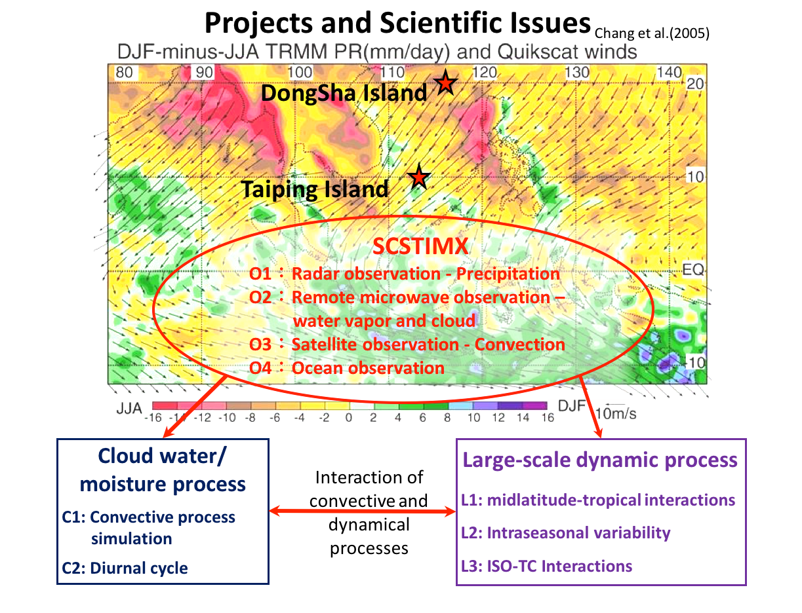

South-China Sea Two Island Monsoon Experiment
(SCSTIMX)
Contact point:
Chung-Hsiung Sui (NTU)
Overview:
SCSTIMX is designed to study the interaction of convection over the MC-SCS with large-scale flow, by deploying observation platforms in the SCS as well as performing numerical modeling.
Observations:
Two types of observational tasks will be carried out by PIs in Taiwan’s universities. The first is intensive observation during the periods (IOPs: Dec. 2017 – Jan. 2018; May-June, 2018) at Taiping Island and Dongsha Island, and the second is extended observation during the periods (EOP: Aug.-Oct. 2018), in coordination with the international projects, “Propagation of IntraSeasonal Tropical Oscillations” (PISTON) and “Years of the Maritime Continent” (YMC). During the winter IOP (Dec. 2017 – Jan. 2018) and the summer IOP (May-June, 2018), Surface Weather Station, Ceilometer, Microwave Radiometer, Wind Profiler and intensive balloon soundings will be set off at Dongsha Island and Taiping Island (4 times a day), along with soundings at the southern part of Taiwan and countries around the SCS and MC regions. In addition, we also plan to carry out missions of target-aiming jet aircraft dropsondes and unmanned aerial vehicle (UAV aerosonde). A couple series of flight will be deployed in Central Weather Bureau (dropsonde) and in Taiwan Typhoon and Flood Research Institute (TTFRI, Aerosonde) during the IOPs to obtain environmental parameters over an expanded area between Taiping Island and Taiwan. We also propose to set up cloud and precipitation radars at Taiping Island supersite in the IOPs. These can be a relocation of the MOST TEAM radar/or NTU Xband dual polarization radar. These radars will be operated in conjunction with the microwave rain radars and/or ceilometers nearby when there are mesoscale convective systems approaching the site, to obtain a more complete monitoring of the cloud microphysics, convection structure, and precipitation intensity. During the EOP (Aug.-Oct., 2018), data will be measured regularly by surface weather station, boundary layer wind profilers, and upper-air balloon sounding.
For more information visit: scstimx.as.ntu.edu.tw